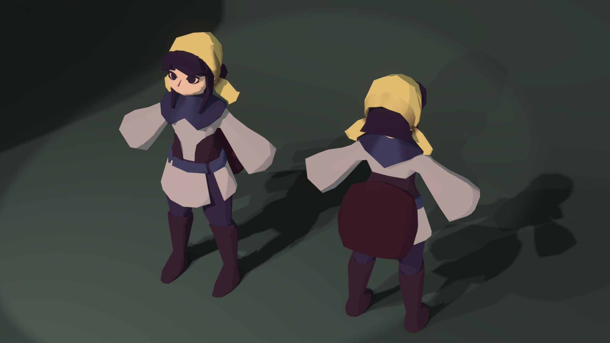
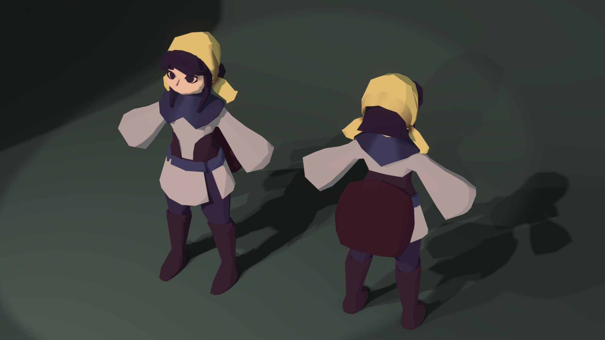
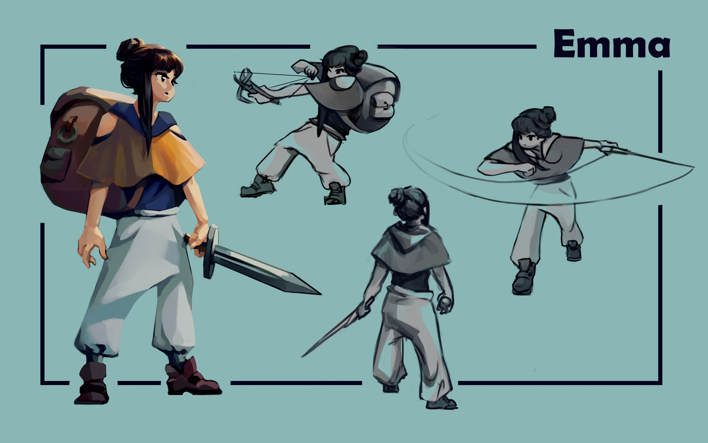
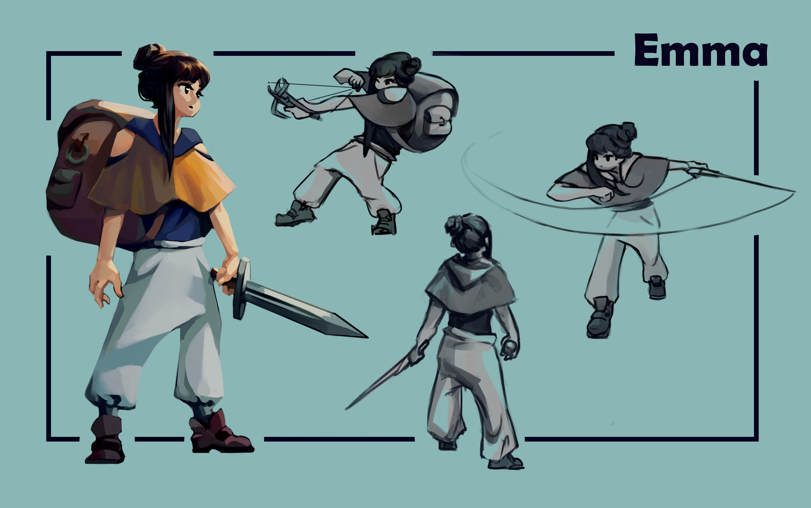
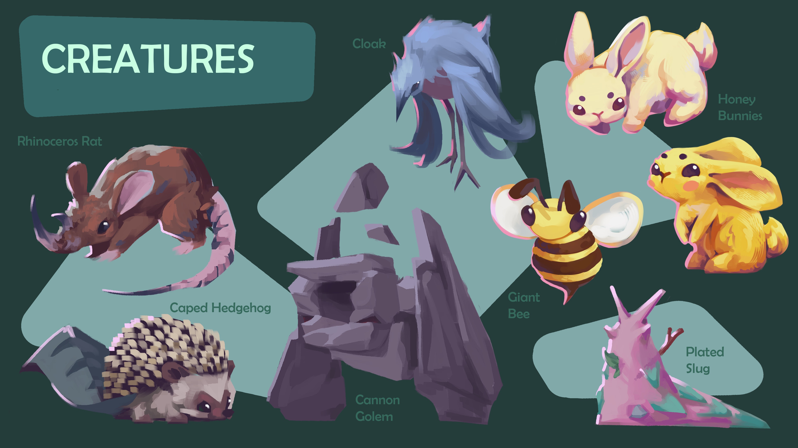
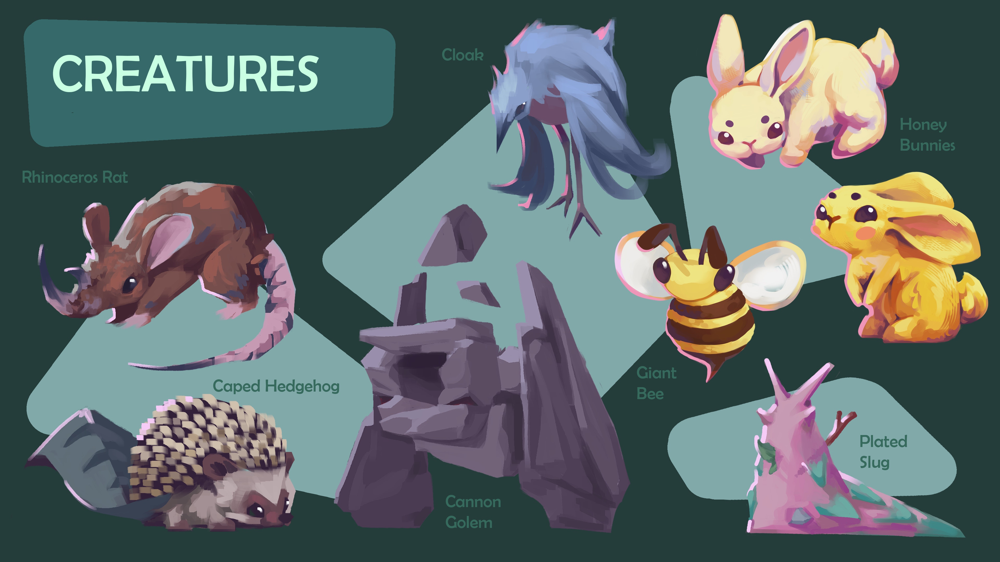
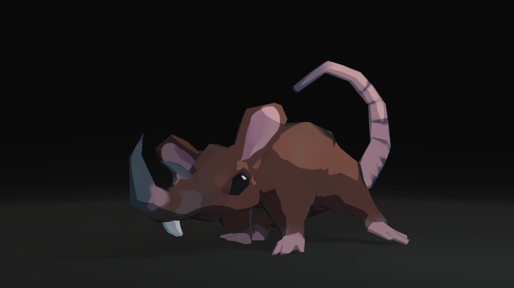
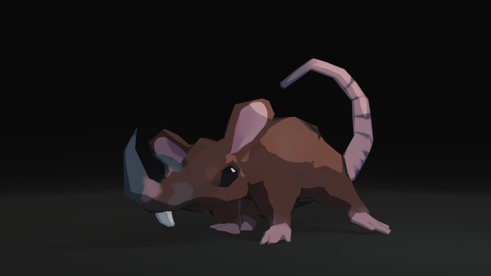

Emma is an apprentice apothecary from Olswald. She lives with her grandmother, as her parents left to help the war efforts when she was very young.
Her master was a military apothecary from the capital, teaching her both the skills of potion-crafting as well as powerful sword techniques. Foraging, monster combat, and dialing in potion recipes are all, but Emma proves time and time again her talent and resolve.
She wears a cobalt-wove bandana made by her grandmother and wields the blade left behind by her father. A gorget is customary for knights in the capital, but a lighter overall harness and a spacious bag for exploring the Aurebosc.
The peninsular continent of Valen composed of massive mountains, lush forests, and broad plains. Rich in magic and relatively undisturbed by humanity, its a haven for some of the world's most powerful creatures and flora.
I originally designed a Pangea-like continent for the entire world, with other biomes and kingdoms. However, to narrow the scope and create a more focused story, I decided to focus on a smaller cut of the world. This also allowed me to be much more specific for the villages, landmarks, and creatures.
Brimming with spiritual energy, the Aurebosc is the dominant forest on the continent. Its vast spiritual energy is stored within igneous rock deep within the earth below. However, excess seeps out and manifests in the flowers, plants, soil, and water.
The Cobalt Bells are the most concentrated occurrence of this energy and are commonly used as a magical and medical resource. Olswald is the only settlement in the area and is located between the mainland south shore, the massive Aureolin Tree, and Star Lake.
The Aurebosc is home to a diverse collection of creatures. Most feed off and support the energy in the forest. Giant bees and honey bunnies live in unison while plated slugs defend them from aggressive rhinoceros rats. Rare cloaks dash in and out of mist and caped hedgehogs stand on their tail and shoot their spines when threatened. Cannon golems reside near caves and hunt by shooting stones and knocking out their prey.
Guardian deity of the Aurebosc, Daurada the Brilliant Elk is the realization of the intense magical energy in the woods. The Aureolin Tree is the heart and beacon of the Aurebosc, with cobalt sap seeping down, forming magical streams across the forest.
Daurada rarely interferes unless there is an eminent threat to the forest, and they were the one who led the first adventurers to the clearing that is now Olswald. They say if you're lucky, you might be able to catch a glimpse of Darada wandering the forest or sleeping under the Aureolin tree at daybreak.
A village built upon the plentiful resources of the forest, Olswald is a village built with iconography respecting their guardian and various characteristics of the landscape. Cobalt infused materials provide protection and comfort and can be seen on the roofs and in some of the tools and cloth. Annual festivals celebrate the village's origin, and much of the Olsans’ culture incorporates local flowers, minerals, and fauna.


 

 



 



 
